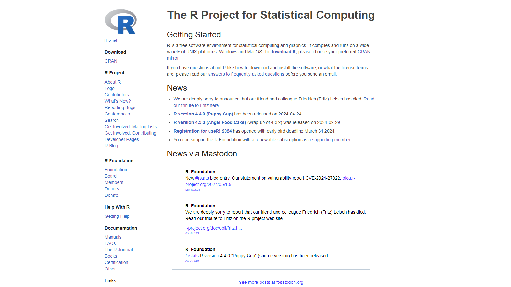
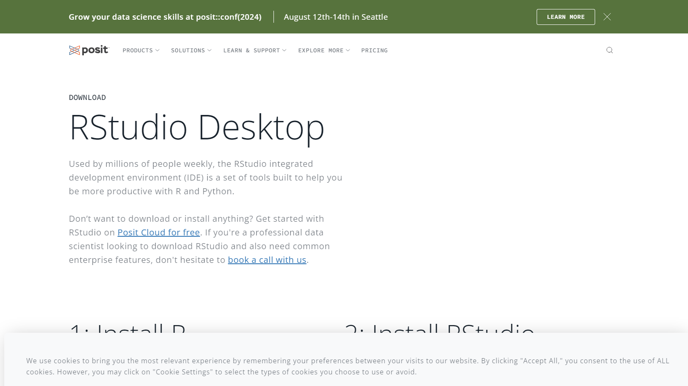
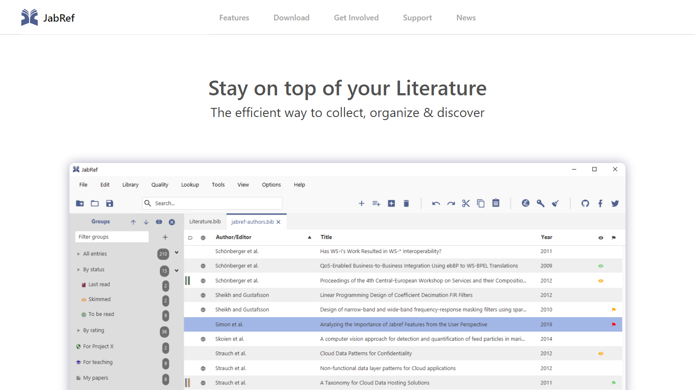
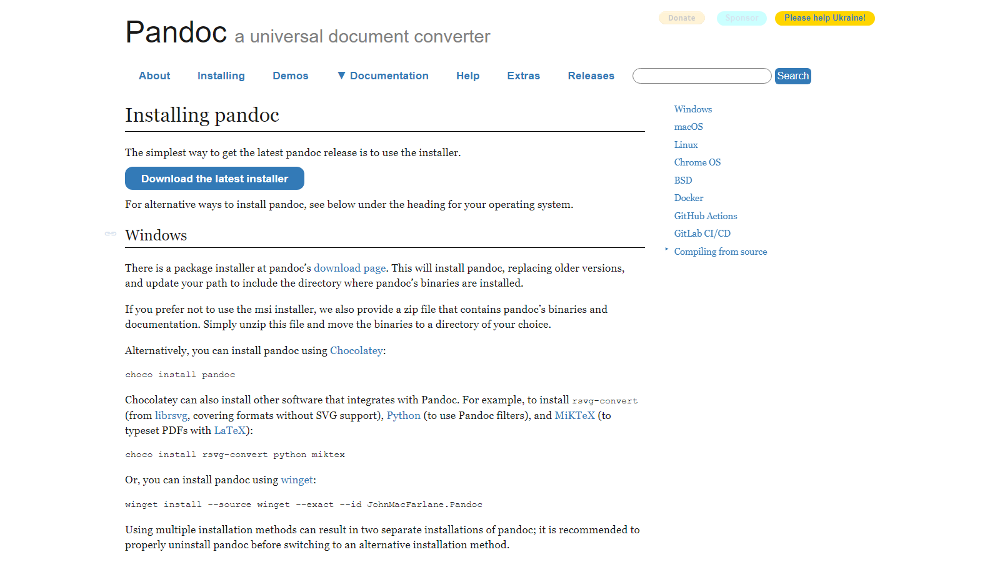

Instalação de programas
Este capítulo fornece instruções sobre como instalar os programas necessários para se trabalhar com o Rmarkdown. Em primeiro lugar, é necessário ter o ambiente R instalado. Em seguida, necessitamos de um ambiente de desenvolvimento integrado (do inglês Integrated Development Environment, IDE; acesse este link para saber o que é um IDE e quais as vantagens de se utilizá-lo), que será onde o usuário poderá escrever seus textos. Também deve-se instalar um ambiente LaTeX para poder gerar arquivos em formato pdf, e, por fim, deve-se instalar um organizador de bibliografias, JabRef, para lidar com arquivos em formato bib (veja aqui o que é um arquivo bib).
Objetivos de aprendizado
- Instalar o R e pacotes necessários
- Instalar um IDE
- Instalar distribuição LaTeX
- Instalar um organizador de bibliografias
Dica de OURO!
Usuários Windows, sugiro fortemente que vocês busquem a configuração do sistema para ativar a VISUALIZAÇÃO DE EXTENSÕES DE ARQUIVOS O que é isso???
Isso significa poder ver no Explorador de arquivos que tipo de arquivo você está observando. Por exemplo, arquivos do programa Word terminam geralmente ou em .doc ou em .docx; arquivos Excel, .xlsx; arquivos Rmarkdown, .rmd, e assim por diante. Caso vocês não saibam como ativar essa opção, leiam como fazer neste endereço: https://support.microsoft.com/pt-br/windows/extens%C3%B5es-de-nome-de-arquivo-comuns-no-windows-da4a4430-8e76-89c5-59f7-1cdbbc75cb01.
R
Acesse o sítio https://www.r-project.org/ (Figura 1.1). A depender do seu sistema operacional (SO), há maneiras diferentes de se instalar o R.
- Windows:
- Acesse o site CRAN e clique no link para baixar a versão mais recente do R para Windows.
- Execute o instalador baixado e siga as instruções do assistente de instalação.
- Mac OS X:
- Vá para o site CRAN e baixe o instalador para a versão mais recente do R para Mac OS X.
- Abra o arquivo baixado e siga as instruções do assistente de instalação.
- Linux:
- Dependendo da sua distribuição Linux, você pode instalar o R usando o gerenciador de pacotes. Por exemplo, para Ubuntu, você pode usar o comando
sudo apt-get install r-base. - Consulte a documentação específica da sua distribuição para obter instruções detalhadas.
- Dependendo da sua distribuição Linux, você pode instalar o R usando o gerenciador de pacotes. Por exemplo, para Ubuntu, você pode usar o comando
Pacotes R necessários
Os pacotes R abaixo (veja este capítulo do livro Curso básico de introdução à linguagem R para entender o que são pacotes de R) são necessários para podermos compilar os diferentes formatos a serem trabalhados na disciplina. Uma vez que o usuário tenha o R instalado, abra o ambiente R e execute os comandos abaixo, um a um:
install.packages("rmarkdown") # Mais importante
install.packages("blogdown") # Blogs
install.packages("bookdown") # Livros, teses e afins
install.packages("xaringan") # Apresentações
install.packages("officer") # Produtos Word, Powerpoint, ExcelAmbiente de desenvolvimento integrado - IDE
Recomenda-se que o IDE RStudio seja instalado no seu computador, pois ele melhora a experiência da interação do usuário com os múltiplos recursos oferecidos pela linguagem Rmarkdown, em especial os inúmeros pacotes desenvolvidos por funcionários desta empresa, os pacotes rmarkdown e bookdown. Ademais, IDEs como este software têm o objetivo de prover ao usuário mais ferramentas na interação entre o código e o resultado da execução do código, além de facilitar o uso de ferramentas alternativas para construção de texto mesclado com códigos (e.g., LaTeX, Markdown etc), o que permite uma dinamicidade na construção de textos acadêmicos.
Acesse o site da RStudio (Figura 1.2) e baixe a versão mais recente do RStudio Desktop para o seu sistema operacional;
Execute o instalador baixado e siga as instruções do assistente de instalação.

Existem outras alternativas de IDE. Fique à vontade para escolher. Listo algumas alternativas abaixo:
VS Code - https://code.visualstudio.com/download
Sublime text - https://www.sublimetext.com/download
Eclipse - https://www.eclipse.org/downloads/packages/installer
Organizador de bibliografias - JabRef
Visite o site do JabRef (Figura 1.3) e baixe a versão mais recente para o seu sistema operacional;
Após o download, execute o instalador e siga as instruções do assistente para concluir a instalação.

Pandoc
Aviso
Caso o usuário tenha optado por utilizar um IDE diferente do RStudio, será necessária a instalação do Pandoc.
Visite o site oficial do Pandoc (Figura 1.4) e encontre as instruções de instalação específicas para o seu sistema operacional;
Siga as instruções fornecidas para baixar e instalar o Pandoc em seu sistema.

Distribuição LaTeX
A maneira mais fácil de ter uma distribuição LateX atualmente é por meio da instalação do pacote R tinytex (Xie 2019). Uma vez que o usuário tenha o R instalado, execute o comando abaixo para poder instalar o pacote. Siga as instruções da tela.
install.packages('tinytex')
tinytex::install_tinytex()